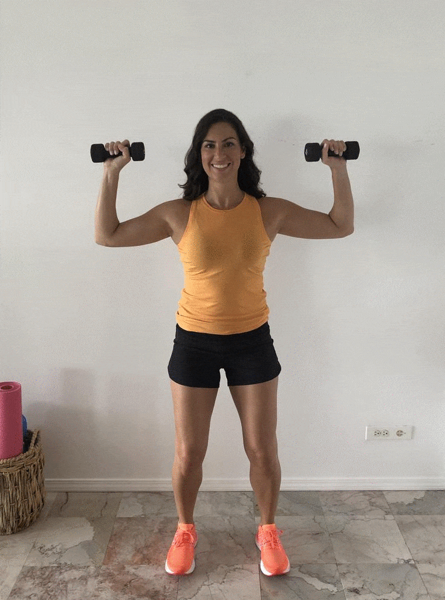
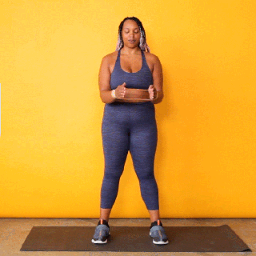

Shoulder:The unlimited guide in 2023!
1. Warm-Ups:
Begin with 5-10 minutes of light cardio and dynamic stretches to increase blood flow and mobility.
2. Overhead Press (Barbell or Dumbbell):
The overhead press, also known as the shoulder press or military press, is a compound exercise that
primarily targets the deltoid muscles of the shoulders. This movement can be performed with either a barbell
or dumbbells. Here's a step-by-step guide for both variations:
Barbell Overhead Press:
Equipment:
1.Barbell: Use a standard barbell with an appropriate weight.
Execution:
1.Setup: Stand with your feet shoulder-width apart. Grip the barbell with your hands slightly wider
than shoulder-width apart, palms facing forward.
2.Rack the Bar: Lift the barbell off the rack and position it at shoulder height. The bar should rest
on the front of your shoulders with your elbows pointing forward.
3.Posture: Engage your core, keep your chest up, and maintain a natural arch in your lower back.
4.Pressing Motion: Inhale and press the bar overhead by extending your arms. Fully extend your elbows
without locking them out at the top.
5.Lowering Phase: Exhale as you lower the barbell back down to the starting position, bringing it to
shoulder height.

Dumbbell Overhead Press:
Equipment:
1.Dumbbells: Choose a pair of dumbbells that you can lift with control.
Execution:
1.Setup: Stand with your feet shoulder-width apart, holding a dumbbell in each hand at shoulder
height. Palms should be facing forward.
2.Posture: Engage your core, keep your chest up, and maintain a natural arch in your lower back.
3.Pressing Motion: Inhale and press the dumbbells overhead by extending your arms. Fully extend your
elbows without locking them out at the top.
4.Lowering Phase: Exhale as you lower the dumbbells back down to shoulder height.

3. Lateral Raises:
Lateral raises are an isolation exercise that targets the lateral (side) head of the deltoid muscles in the
shoulders. This exercise is effective for building shoulder width and enhancing the overall appearance of
the shoulders. Here's a step-by-step guide on how to perform lateral raises.
Equipment:
1.Dumbbells: Choose a pair of dumbbells that you can lift with control.
Execution:
1.Setup: Stand with your feet shoulder-width apart, holding a dumbbell in each hand at your sides.
Palms should be facing your body.
2.Posture: Maintain a slight bend in your elbows and keep your back straight with a natural arch in
your lower back. Engage your core for stability.
3.Lifting Motion: Inhale and, with a slight bend in your elbows, lift the dumbbells directly to the
side until your arms are parallel to the ground. Your body should form a "T" shape.
4.Top Position: Hold the position for a brief moment, focusing on contracting the lateral
deltoids.
5.Lowering Phase: Exhale as you lower the dumbbells back down to the starting position.

4. Front Raises:
Front raises are another isolation exercise that targets the front (anterior) head of the deltoid muscles in
the shoulders. This exercise helps build shoulder strength and contributes to a well-rounded shoulder
development. Here's a step-by-step guide on how to perform front raises.
Equipment:
1.Dumbbells: Choose a pair of dumbbells with an appropriate weight.
Execution:
1.Setup: Stand with your feet shoulder-width apart, holding a dumbbell in each hand at your sides.
Palms should be facing your body.
2.Posture: Maintain a slight bend in your elbows and keep your back straight with a natural arch in
your lower back. Engage your core for stability.
3.Lifting Motion: Inhale and, with a slight bend in your elbows, lift the dumbbells directly to the
side until your arms are parallel to the ground. Your body should form a "T" shape.
4.Top Position: Hold the position for a brief moment, focusing on contracting the lateral
deltoids.
5.Lowering Phase: Exhale as you lower the dumbbells back down to the starting position.

5. Upright Rows
Upright rows are a compound exercise that primarily targets the upper trapezius muscles but also works the
lateral deltoids and the muscles of the upper back. Here's a step-by-step guide on how to perform upright
rows.
Equipment:
1.Barbell or Dumbbells: You can perform upright rows with either a barbell or dumbbells.
Execution:
Barbell Upright Rows:
1.Setup: Stand with your feet shoulder-width apart. Hold a barbell in front of you with an overhand
grip, hands slightly narrower than shoulder-width apart.
2.Posture: Keep your back straight, chest up, and shoulders back. Engage your core for stability.
3.Lifting Motion: Inhale and lift the barbell straight up towards your chin by pulling your elbows up
and out to the sides. Keep the barbell close to your body.
4.Top Position: Hold the barbell at the top of the movement for a brief moment, focusing on
contracting the upper trapezius and deltoid muscles.
5.Lowering Phase: Exhale as you lower the barbell back down to the starting position in a controlled
manner.

Dumbbell Upright Rows:
1.Setup: Stand with your feet shoulder-width apart. Hold a barbell in front of you with an overhand
grip, hands slightly narrower than shoulder-width apart.
2.Posture: Keep your back straight, chest up, and shoulders back. Engage your core for stability.
3.Lifting Motion: Inhale and lift the barbell straight up towards your chin by pulling your elbows up
and out to the sides. Keep the barbell close to your body.
4.Top Position: Hold the barbell at the top of the movement for a brief moment, focusing on
contracting the upper trapezius and deltoid muscles.
5.Lowering Phase: Exhale as you lower the barbell back down to the starting position in a controlled
manner.

6. Rotator Cuff Exercises:
Strengthening the rotator cuff muscles is important for maintaining shoulder stability and preventing
injuries. The rotator cuff is a group of muscles and tendons that surround the shoulder joint, providing
support and facilitating smooth movement. Here are some effective rotator cuff exercises.
1. External Rotation with Resistance Band.
- Attach a resistance band to a fixed point at elbow height.
- Stand with your side facing the anchor point, holding the band in the hand closest to the anchor.
- Keep your elbow bent at a 90-degree angle, and slowly rotate your arm away from your body.
- Return to the starting position with control.
2. Internal Rotation with Resistance Band.
- Attach a resistance band to a fixed point at shoulder height.
- Stand with your side facing away from the anchor point, holding the band in the hand closest to the anchor.
- Keep your elbow bent at a 90-degree angle, and slowly rotate your arm across your body.
- Return to the starting position with control.
3. Prone Y and T Exercises.
- Lie face down on an incline bench or a stability ball.
- For the "Y" position, extend your arms in front of you at a 45-degree angle, forming a Y shape.
- For the "T" position, extend your arms to the sides, forming a T shape.
- Lift your arms off the ground and squeeze your shoulder blades together.
- Lower your arms back down with control.
4. Scaption Exercise.
- Hold light dumbbells in each hand.
- Elevate your arms at a 45-degree angle from your body (between the frontal and lateral planes).
- Keep your thumbs pointing upward.
- Lift the dumbbells to shoulder height and lower them with control.
